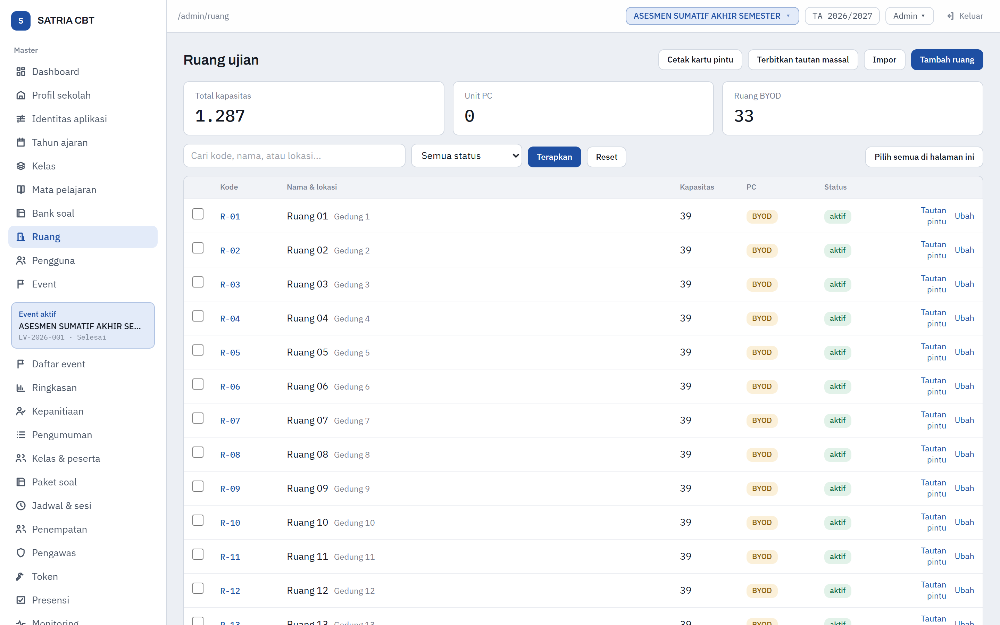
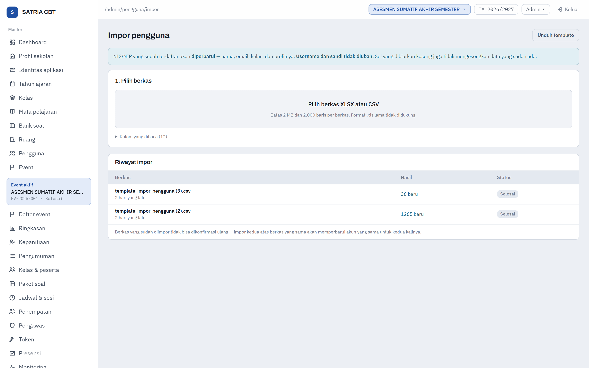

5. Ruang & pengguna
Ruang ujian beserta kapasitasnya, dan akun semua peran. Dua-duanya bisa diisi massal.
Ruang ujian

Ruang menyimpan dua angka yang berbeda dan sering tertukar:
- Kapasitas — berapa siswa bisa ditempatkan di ruang ini.
- PC — berapa perangkat tersedia. Angka ini keterangan, bukan pembatas; aplikasi tidak menolak penempatan karena jumlah PC kurang.
Tautan masuk ruang dan kode pengawas

Ada dua hal berbeda di laman ini, dan keduanya sering tertukar:
- Tautan masuk ruang — alamat yang dibuka pengawas untuk masuk ke ruang itu tanpa akun. Bisa dicabut kapan saja, dan yang sudah dicabut langsung berhenti bekerja.
- Kode pengawas — angka yang dibacakan kepada pengawas, dicetak pada kartu. Terpisah dari tautan, dan punya masa berlaku sendiri.
Tautan yang tercetak pada kartu tidak bisa dibatalkan oleh penerbitan ulang kode. Karena itu tombol Terbitkan ulang hanya menyentuh baris yang belum punya kode — kartu yang sudah di tangan pengawas tidak mati mendadak.
Pengguna

Empat peran, dan masing-masing melihat aplikasi yang sangat berbeda:
- Admin — seluruh menu sekolah. Anda.
- Guru — bank soal, paket soal, dan koreksi uraian.
- Pengawas — portal ruang dan presensi. Tidak bisa melihat soal.
- Siswa — jadwal ujian, pengerjaan, dan nilai yang sudah dipublikasikan.
Mengganti username
Username berdiri sendiri, bukan kolom di dalam form Ubah. Alasannya praktis: username tertempel di kartu login yang dipegang siswa, dan satu salah ketik yang tidak disadari langsung mengunci anak itu pada hari ujian. Tombolnya terpisah supaya tidak tertekan tanpa sengaja saat mengubah nama.
Reset sandi
Tombol Reset mengembalikan sandi ke sandi bawaan aplikasi. Sampaikan ke pemilik akun bahwa sandi lama tidak berlaku lagi — tidak ada surat pemberitahuan otomatis.
Impor pengguna secara massal

-
Unduh template, isi satu baris per pengguna, tentukan perannya di kolom yang tersedia.
-
Unggah. Pratinjau menampilkan tiap baris: dibuat, diperbarui, atau ditolak beserta alasannya.
-
Konfirmasi. Baru pada langkah ini data tersimpan.
Kartu akun
Setelah akun jadi, tombol Ekspor dapat menghasilkan kartu login untuk dicetak dan dibagikan. Satu akun menghasilkan satu halaman PDF; banyak akun sekaligus menghasilkan satu berkas ZIP — dan itu memakan waktu lebih lama, bukan gagal.